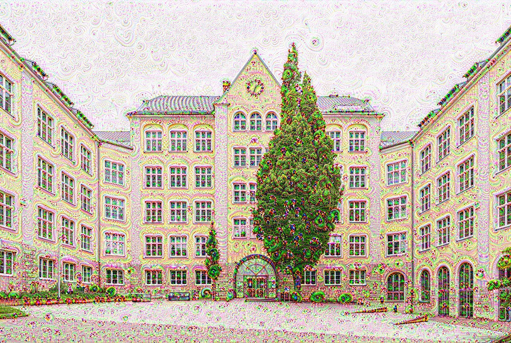

구글 연구팀은 이미지 분류 신경망(GoogLeNet) 내부를 들여다보다 발견했습니다. 네트워크가 '보고 싶어 하는' 패턴을 증폭시키면, 이미지가 기괴하게 변형됩니다 — 존재하지 않는 눈알, 개 얼굴, 탑이 증식. 이를 Inceptionism이라 불렀습니다.

DeepDream 결과물 · 구름·건물에 개 얼굴·눈알이 증식합니다
DeepDream 프로세스
신경망의 중간 레이어(주로 inception_4c)에서 감지된 패턴을 최대화하도록 이미지를 역방향으로 수정. 반복할수록 패턴이 과장됩니다.
왜 개 얼굴이 많을까? ImageNet에는 개 품종이 120가지. '개 찾기' 전문가가 된 신경망이 구름에서도 개를 봅니다.